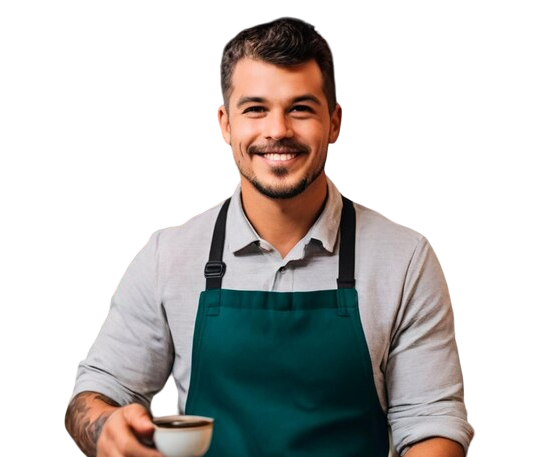

Nuestro Equipo

María López
Maestra Pastelera

Juan Martínez
Barista Jefe

Sofía Ramírez
Gerente de Atención al Cliente
Donde el café se encuentra con la dulzura
Queiques es más que una simple cafetería y pastelería. Somos un rincón acogedor donde los aromas del café recién molido se mezclan con la dulzura de nuestros pasteles artesanales.
Fundada con pasión y dedicación, Queiques se ha convertido en el lugar favorito de los amantes del café y los dulces en nuestra comunidad.
Queiques abre sus puertas como un pequeño café en el corazón de la ciudad.
Nos convertimos en el destino favorito para los amantes del café y los pasteles gourmet.
Celebramos nuestra red de cafeterías y nuestro compromiso continuo con la calidad y la innovación.
Ofrecer experiencias únicas a través de nuestro café de especialidad y pasteles artesanales, creando un espacio acogedor donde cada cliente se sienta como en casa.
Ser reconocidos como la cafetería y pastelería más innovadora y querida, inspirando momentos de felicidad en cada taza y en cada bocado.
Maestra Pastelera
Barista Jefe
Gerente de Atención al Cliente
En Queiques, creemos que la diversidad enriquece nuestra comunidad. Nuestro espacio está diseñado para ser acogedor para todos, sin importar su origen, edad o estilo de vida.
Ofrecemos opciones para todos los gustos y necesidades dietéticas, incluyendo alternativas veganas, sin gluten y bajas en azúcar.
Utilizamos solo los mejores granos de café y los ingredientes más frescos en nuestros pasteles, garantizando una experiencia culinaria excepcional.
Nos esforzamos por reducir nuestro impacto ambiental utilizando empaques biodegradables y apoyando a productores locales y sostenibles.
Siempre estamos experimentando con nuevos sabores y técnicas para sorprender y deleitar a nuestros clientes con creaciones únicas.
Te invitamos a vivir la experiencia Queiques. Ven y descubre por qué somos más que una simple cafetería.